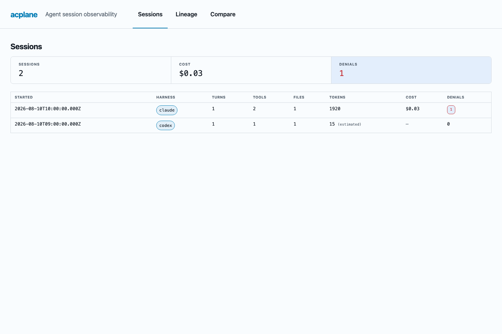

See what agents actually do.
Acplane sits between an ACP editor and agent harness. It preserves non-permission message payloads, applies policy to permission requests, and records the exchange outside the model context.
permission request
5 indexed flows
3 policy inputs
3 outcomes
The unchanged path
Acplane preserves the JSON payload of every non-permission ACP message between the editor and harness. The recorder observes a copy; it does not add telemetry to the model prompt or context.
editor → acplane → harness
The controlled branch
Acplane special-cases one live method: session/request_permission. First-match rules inspect tool kind, path globs, and command globs, then allow, deny, or escalate the request.
Allow and deny are answered locally. Escalate sends the request to a human in the editor. The indexed event records who decided and which rule matched.
The flight log
Every emitted ACP message is timestamped and written to a JSONL file outside agent-owned state. High-confidence Anthropic, OpenAI, GitHub, AWS, and bearer credentials are redacted at rest.
Forwarded traffic is not rewritten by the redactor. The durable record stays outside the model context.
The session after the session
The indexer turns five protocol flows into sessions, turns, tool calls, file touches, usage samples, and permission events. The local dashboard exposes timelines, cross-harness comparison, and file lineage.

Run it where the agents run
Point an ACP-compatible editor at Acplane, select a configured harness, then index the resulting session log.
npm install
npm run build
node bin/acplane.mjs index
node bin/acplane.mjs uiObservation fails open
Recorder failures never block the session. Acplane reports the dropped telemetry and keeps forwarding the underlying traffic.